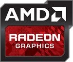

AMD

Unter Ubuntu werden abhängig vom verbauten Grafikprozessors unterschiedliche Möglichkeiten angeboten, den XServer mit ATI- bzw. AMD-Grafikkarten (ATI wurde 2006 von AMD gekauft) zu betreiben:
ati: Dieser Treiber ist ein Wrapper, der sich den richtigen und normalerweise bereits vorinstallierten Treiber entsprechend dem Grafikkartenmodell sucht. Er sollte mit allen Grafikkarten funktionieren, die von einem der drei folgenden Treibern unterstützt werden:
radeon: Dieser freie und quelloffene Treiber funktioniert für die meisten Radeon-Chipsätze von der ATI-Radeon-7000-Serie bis zur AMD-Radeon-R200-Serie mit stabiler Unterstützung für 2D- wie 3D-Beschleunigung. Für neuere Chipsätzen mit GCN-1.2-Architektur kann ab Ubuntu 16.04 alternativ auch der neue Treiber amdgpu getestet werden (siehe unten).
fglrx (bis 15.10): Dies war der offizielle, aber proprietäre Treiber von AMD (Catalyst), der ab Ubuntu 7.04 über die Verwaltung eingeschränkter Treiber nachinstalliert werden konnte. Allerdings wurden im Laufe der Entwicklung mehr und mehr ältere Grafikkarten in den Legacy-Support verschoben. So wurden schon ab Ubuntu 9.04 nur noch die Radeon-HD-Chipsätze mit PCIe-Schnittstelle (also keine AGP-Modelle) unterstützt. Mit Aktualisierung des Treibers auf Version 15 in den offizielle Paketquellen ab Ubuntu 14.04 Anfang 2016 entfiel dann die Unterstützung für Chipsätze ohne GCN-Architektur. Zur Veröffentlichung von Ubuntu 16.04 wurde von AMD schließlich bekanntgegeben, dass die Weiterentwicklung des fglrx-Treibers zugunsten des neuen proprietären AMD-GPU-PRO-Treibers (siehe unten) vollständig eingestellt wurde. Die letzte Version ist auch nicht mehr kompatibel mit dem XServer ab Ubuntu 16.04.
fglrx/Konfiguration: Tiefer gehende Erklärung der Konfiguration mit Erklärung einiger Optionen.
fglrx/Problembehebung: Sammlung von aufgetauchten Problemen mit Behebung.
amdgpu (ab 16.04): Das ist der neue freie und quelloffene Treiber für Chipsätze mit GCN-Architektur, der sich aber noch mit aktiver Beteiligung von AMD selber in der Entwicklung befindet. Die Unterstützung setzt GCN 1.2 (ab Radeon R9 285) voraus. Eine experimentelle Unterstützung für GCN 1.0 besteht erst ab Kernel 4.7, für GCN 1.1 ist sie schon vorhanden, aber nur optional und unter Ubuntu nicht standardmäßig aktiviert. Für GCN 1.3 gibt es derzeit noch keine Implementierung. Chipsätze mit GCN 1.0 und 1.1 können mit dem radeon-Treiber (siehe oben) betrieben werden.
AMD GPU-PRO (ab 16.04): Als Ersatz für den fglrx-Treiber entwickelt AMD ihren neuen offiziellen Treiber aufgesetzt auf dem freien amdgpu-Treiber (siehe oben). Allerdings stehen damit zusätzliche proprietäre Funktionen zur Verfügung, wie bspw. die Vulkan-Schnittstelle. Auch dieser Treiber befindet sich noch in der Entwicklung und für Ubuntu 16.04 kann eine Beta-Version
 getestet werden. Damit werden ebenfalls ausschließlich Chipsätze mit GCN 1.2 unterstützt.
getestet werden. Damit werden ebenfalls ausschließlich Chipsätze mit GCN 1.2 unterstützt.
Links¶
Grafikkarten
 Übersichtsartikel
ÜbersichtsartikelAusführliche Tabellen von X.org zu AMD-Grafikchips (Versionen, Namen, Treiber, Fähigkeiten)
- Erstellt mit Inyoka
-
 2004 – 2017 ubuntuusers.de • Einige Rechte vorbehalten
2004 – 2017 ubuntuusers.de • Einige Rechte vorbehalten
Lizenz • Kontakt • Datenschutz • Impressum • Serverstatus -
Serverhousing gespendet von